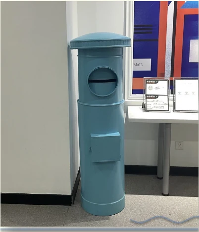

Blue Focus Campaign concept
Spring Mail.
A postcard to your future self. I helped bring the idea to life as an office activation at Blue Focus.


The idea
What if a spring activity felt like making a small promise to yourself? Employees could write down a hope in spring, then revisit it in autumn. Addressing the postcard to their future selves gave the exercise a personal reason to participate.
The participation journey
People could use a printed postcard or scan a QR code to create their message. I helped develop the concept, wrote campaign copy and mapped how participants would write, personalise and send their postcards. The project went from a proposal to an installation with a physical postbox and display at the office.
- Organisation
- Blue Focus
- My contribution
- Concept development, campaign copy and participation journey
- Format
- Print, digital and in-office activation
From postcard to installation